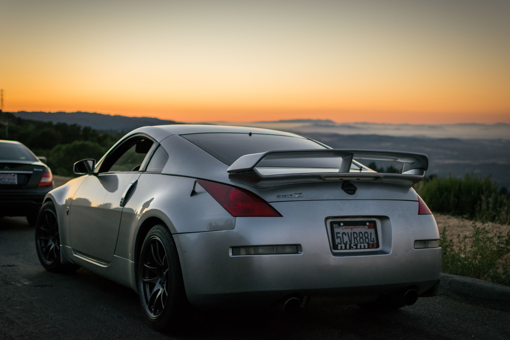
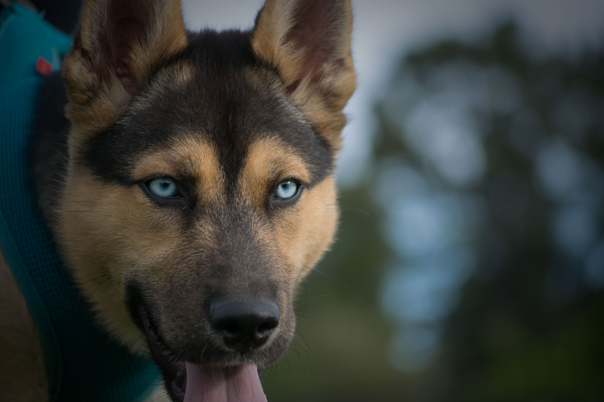
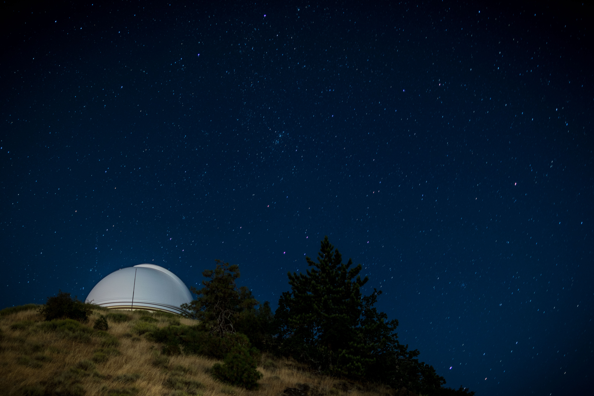
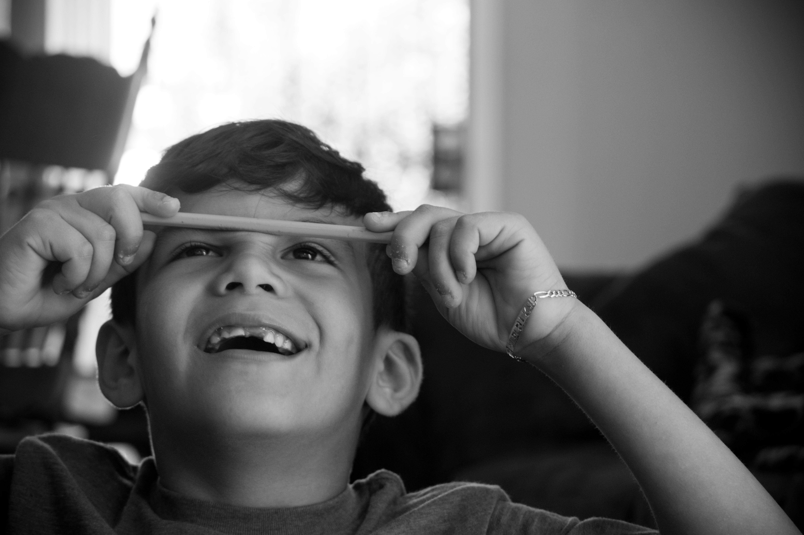

Preview
Car Photos
This picture was taken in portola valley. I used a 1.8 fixed 35mm lense on a Nikon D3300. The photo was taken with an f stop of 1.8, a shutter speed of____, and an iso of ___
Pets
This photo was taken in a Redwood City dog park. I used a 3.4 zoom 80-200mm lense on a Nikon D3300. This photo was taken with and f stop of 3.4, a shutter speed of ___, and an iso of ___
Long Exposure
This photo was taken at the San Jose Observatory suring a metor shower. I used a 1.8 fixed 35mm lense on a Nikon D3300. This photo was taken with and f stop of 1.8, a shutter speed of ___, and an iso of ___
Black and White
The photo is taken of Erik Rodriguez while doing homework. I used a 3.4 zoom 80-200mm lense on a Nikon D3300. This photo was taken with and f stop of 3.4, a shutter speed of ___, and an iso of ___
Information
If you are an ametuare photagrapher or thinking about starting to take photos brwose around my website to learn about. I am in no way an expert but thought this was a great way to teach ohters and even get feedback from anyine willing to do so. The site is broken down to 4 different topics that starts off with a brief intro on each one. All Photos were taken by me unles otherwise specified.